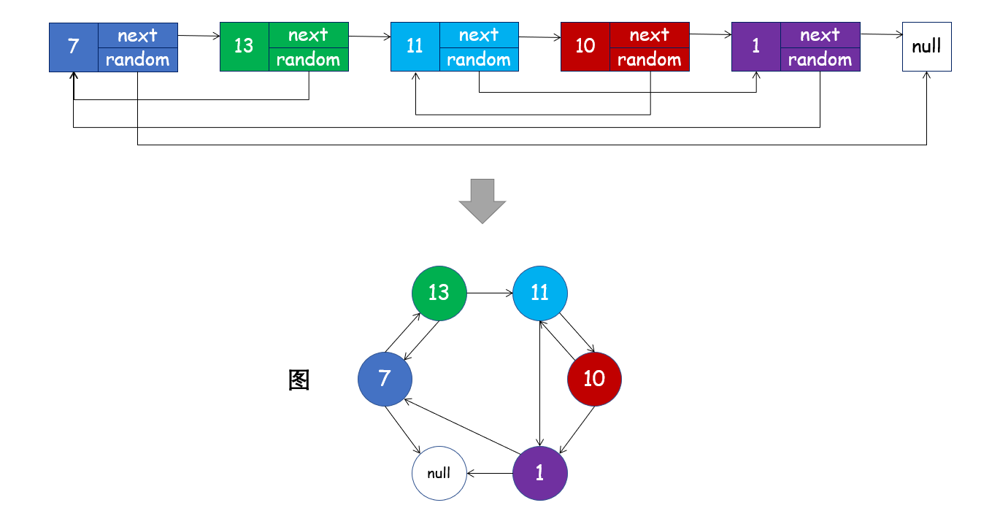
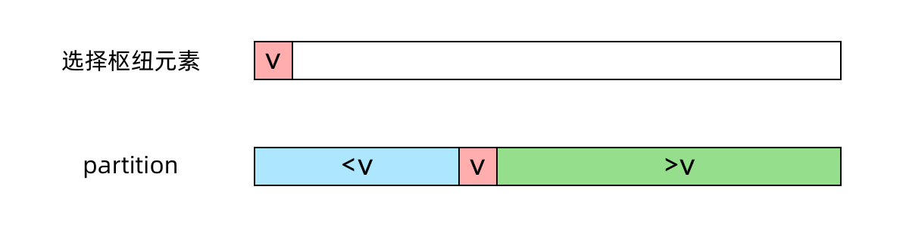
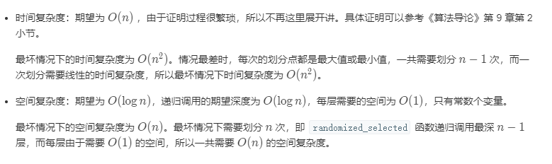

前言
最近随便投了字节跳动的暑期实习生，没想到简历过关了，4.12日先去笔试。考虑到Leetcode上面的题目比较多，决定先把《剑指Offer》上的所有题目都刷一遍。
1. 数组中重复的数字
思路：使用哈希表或者集合等数据结构，遍历数组中的数字，当数字没有出现在集合中时，将其加入集合，当数字已经出现在集合中时，说明其重复了，直接返回。
时间复杂度：$O(n)$，n为数组大小。
空间复杂度: $O(n)$
代码：
class Solution:
def findRepeatNumber(self, nums: List[int]) -> int:
dic={}
for i in nums:
if i not in dic.keys():
dic[i]=1
else:
return i2. 二维数组中的查找
思路：有些类似于二叉查找树的思路，从右上角开始搜索，左侧的数字都比当前数小，下方的数字都比当前数大。如果当前数小于目标，则向下移动一格，大于目标，则向左移动一格，等于目标返回True，超出边界时需要返回False。
时间复杂度：$O(m+n)$，这是从右上角搜索到左下角的最坏情况，m为行数，n为列数。
空间复杂度: $O(1)$
代码：
class Solution:
def findNumberIn2DArray(self, matrix: List[List[int]], target: int) -> bool:
if matrix!=[]:
row=0
col=len(matrix[0])-1
while (0<=row<=len(matrix)-1 and 0<=col<=len(matrix[0])-1):
if matrix[row][col]>target:
col-=1
elif matrix[row][col]<target:
row+=1
else:
return True
return False3.替换空格
思路：将字符串转换为字符列表进行遍历替换即可。（也可以直接调用字符串的replace函数）
注意：Python中常见的不可变类型有数字、字符串和元组，可变类型有列表和字典。区别主要是： 当不可变数据类型的对应变量的值发生了改变，那么它对应的内存地址也会发生改变。 而可变数据类型可以在不改变内存地址的前提下修改对应内存的值。所以，如果我们要原地修改字符串的内容，需要将其转换为列表。
时间复杂度：$O(n)$，n为原字符串长度。
空间复杂度: $O(m)$，m为替换空格后字符串长度。
代码：
class Solution:
def replaceSpace(self, s: str) -> str:
stLi=list(s)
for i in range(len(stLi)):
if stLi[i]==' ':
stLi[i]='%20'
return "".join(stLi)4.从尾到头打印链表
思路1：递归法，递归结束条件为当前指针为None，利用递归的机制进行求解。（非尾递归，会先将当前层递归函数保存在栈空间中，等待下层递归函数执行完返回）
时间复杂度：$O(n)$，n为链表长度。
空间复杂度: $O(n)$。
代码：
# Definition for singly-linked list.
# class ListNode:
# def __init__(self, x):
# self.val = x
# self.next = None
class Solution:
def reversePrint(self, head: ListNode) -> List[int]:
return self.reversePrint(head.next)+[head.val] if head!=None else []注：值 A if 条件语句 else 值B，如果条件满足则值A，否则值B。
思路2：辅助栈，利用栈的性质（先进后出）求解。
时间复杂度：$O(n)$，n为链表长度。
空间复杂度: $O(n)$。
代码：
# Definition for singly-linked list.
# class ListNode:
# def __init__(self, x):
# self.val = x
# self.next = None
class Solution:
def reversePrint(self, head: ListNode) -> List[int]:
p=head
result=[]
while (p!=None):
result.append(p.val)
p=p.next
return result[::-1]5. 重建二叉树
思路：我们生成二叉树主要有两种做法，一是利用标记了空节点的层次遍历序列，二是利用前序（后序）遍历加上中序遍历。后者的具体做法是分治法：
- 前序遍历的第 1 个结点一定是二叉树的根结点；
- 在中序遍历中，根结点把中序遍历序列分成了两个部分，左边部分构成了二叉树的根结点的左子树，右边部分构成了二叉树的根结点的右子树。
- 查找根结点在中序遍历序列中的位置，可以遍历，也可以在一开始就记录下来。

通过分治，我们可以递归求解。
代码：
# Definition for a binary tree node.
# class TreeNode:
# def __init__(self, x):
# self.val = x
# self.left = None
# self.right = None
class Solution:
def buildTree(self, preorder: List[int], inorder: List[int]) -> TreeNode:
def build(preL,preR,inL,inR):
if preL>preR or inL>inR:#当前子树为空
return None
root=TreeNode(preorder[preL])
inPos=inorder.index(root.val)
leftLen=inPos-inL
root.left=build(preL+1,preL+leftLen,inL,inPos-1)#分治，划分左子树和右子树的序列
root.right=build(preL+leftLen+1,preR,inPos+1,inR)
return root
if preorder!=[]:
return build(0,len(preorder)-1,0,len(inorder)-1)
return None6. 用两个栈实现队列
思路： 我们可以设计栈A用于入队操作，栈B用于将元素倒序，从而实现出队操作。
加入队尾
appendTail()函数： 将数字val加入栈A即可。删除队首
deleteHead()函数：有以下三种情况。
- 当栈
B不为空：B中仍有已完成倒序的元素，因此直接返回B的栈顶元素。 - 否则，当
A为空： 即两个栈都为空，无元素，因此返回 -1 。 - 否则： 将栈
A元素全部转移至栈B中，实现元素倒序，并返回栈B的栈顶元素。
- 当栈
时间复杂度：入队$O(1)$，出队$O(n)$
空间复杂度：$O(n)$
这个思路只需要保证入队、出队操作的正确返回即可，不需要维护一个真正的用栈模拟的队列。还可以用栈A模拟队列，辅助栈B用于模拟队列的入队或者出队操作，不过那样会比较慢，因为每一次使用辅助栈B都会涉及倒序操作。
class CQueue:
def __init__(self):
self.A, self.B = [], []
def appendTail(self, value: int) -> None:
self.A.append(value)
def deleteHead(self) -> int:
if self.B:
return self.B.pop()
if not self.A:
return -1
while self.A:
self.B.append(self.A.pop())
return self.B.pop()7.斐波那契数列
思路：经典题，动态规划求解，相较于递归节约时间和空间。
时间复杂度：$O(n)$
空间复杂度：$O(n)$
class Solution:
def fib(self, n: int) -> int:
fib=[0,1]
for i in range(2,n+1):
fib.append((fib[i-1]+fib[i-2])%1000000007)#实际上python只需要在return时取余即可，这里是向java等语言看齐，防止越界
return fib[n]事实上，这道题的DP状态矩阵还可以进一步优化，仅使用两个变量存储，降为$O(1)$。
class Solution:
def fib(self, n: int) -> int:
a, b = 0, 1
for _ in range(n):
a, b = b, a + b
return a % 10000000078.青蛙跳台阶问题
思路：依然是动态规划问题，青蛙跳到第1级台阶只有一个路径，第2级台阶只有两个路径，第n级台阶的路径为跳到第n-2级台阶的路径数加上跳到第n-1级台阶的路径数之和。
时间复杂度：$O(n)$
空间复杂度：$O(1)$
class Solution:
def numWays(self, n: int) -> int:
a,b=1,2
if n<2:
return a
for _ in range(n-2):
a,b=b,a+b
return b%10000000079.旋转数组的最小数字
思路：这种类型的题目，如果我们直接使用线性级别的时间复杂度肯定能做，但没啥意思。查找、排序的题目如果想达到对数级别的时间复杂度，一定要尝试二分法（减治思想）。
- 本题的思路是通过二分法减治排除必不可能是最小值的元素。
- 首先，与常规二分法一样，我们设置两个指针left和right指向数组的左右边界。mid=（left+right）//2
- 我们比较numbers[mid]与numbers[right]的值，分为以下三种情况:
- numbers[mid]<numbers[right]：根据旋转数组的性质，说明从numbers[mid]到numbers[right]必然是升序序列，所以mid+1到right的数字必然大于mid位置的数字，所以它们都不可能是最小值，可以排除，进入[left，mid]闭区间查找最小值。
- numbers[mid]>numbers[right]：根据旋转数组的性质，说明旋转点必然在numbers[mid+1]到numbers[right]之间，进入[mid+1，right]闭区间查找最小值。
- numbers[mid]==numbers[right]：此时，我们不知道最小值在[left，mid]闭区间还是[mid+1，right]闭区间中， 例 [1, 0, 1, 1, 1]中，最小值在[left，mid]，例[1, 1, 1, 0, 1]中，最小值在[mid+1，right]中。虽然我们无法进行二分减治，但是此时我们确定了两个相等的数，并且我们知道删除其中一个不影响最终寻找最小值，我们可以将right减1，缩小区间，再次尝试二分。
- 迭代二分后，最终left将超过right，此时left的位置即为最小值的位置。
- 为什么不比较numbers[mid]与numbers[left]的值？
- 例子[1,2,3,4,5]中，numbers[mid]>numbers[left]，最小值在[left，mid]中，但在例子[3,4,5,1,2]中，numbers[mid]>numbers[left]，最小值却在[mid+1，right]中，考虑到未旋转的特殊情况，我们不能使用中间数与首个数比较。
时间复杂度：$O(logn)$
空间复杂度：$O(1)$
class Solution:
def minArray(self, numbers: List[int]) -> int:
left=0
right=len(numbers)-1
while(left<right):#二分查找这里是小于等于，因为二分查找需要比较最后一个长度为1的区间的值与目标是否相等，这里仅需找到最后一个长度为1的区间即可
mid=(left+right)//2
if numbers[mid]>numbers[right]:
left=mid+1
elif numbers[mid]<numbers[right]:
right=mid
else:
right-=1
return numbers[left]10.矩阵中的路径
思路：这类走迷宫问题，我们首先很容易想到的就是DFS+回溯算法。类似的题目还有解数独、全排列、皇后问题等。基本的思路就是尝试从矩阵中的每个位置出发，如果当前位置的字符等于目标字符串的首字符，那么继续向左、右、上、下四个方向尝试匹配，目前字符串的指针加1。如果目标字符串的指针到达其长度，说明已经完成匹配，可以返回True。特别地，在这里，同一位置的字符不能重复选择，我们需要设置一个visited矩阵。

class Solution:
def exist(self, board: List[List[str]], word: str) -> bool:
visited=[[False for _ in board[0]] for _ in board]
def backtrack(row,col,index):
if index==len(word):
return True
if (0<=row<=len(board)-1 and 0<=col<=len(board[0])-1):
if board[row][col]==word[index] and visited[row][col]==False:
visited[row][col]=True
res=backtrack(row+1,col,index+1) or backtrack(row-1,col,index+1) or backtrack(row,col+1,index+1) or backtrack(row,col-1,index+1)#这里不能直接return，否则无法回溯
visited[row][col]=False#回溯已访问矩阵
return res
for row in range(len(board)):
for col in range(len(board[0])):
if backtrack(row,col,0):##尝试每个位置出发
return True
return FalsePS：这里的visited矩阵可以不用开，直接原地修改board矩阵的元素为False即可。
class Solution:
def exist(self, board: List[List[str]], word: str) -> bool:
def backtrack(row,col,index):
if index==len(word):
return True
if (0<=row<=len(board)-1 and 0<=col<=len(board[0])-1):
if board[row][col]==word[index]:
tmp,board[row][col]=board[row][col],False
res=backtrack(row+1,col,index+1) or backtrack(row-1,col,index+1) or backtrack(row,col+1,index+1) or backtrack(row,col-1,index+1)
board[row][col]=tmp
return res
for row in range(len(board)):
for col in range(len(board[0])):
if backtrack(row,col,0):
return True
return False11. 机器人的运动范围
思路：DFS，有点类似于二叉树的节点数统计。判断当前位置是否可以到达的条件是：
- 没有越界；
- 数位和小于k；
- 未访问过。
一旦该位置不可到达，立刻返回0；如果该位置可达，那么返回1+dfs(row+1,col)+dfs(row,col+1)，表示当前节点可达且继续向右、下方遍历。
注意，此处机器人虽然可以向上、下、左、右进行遍历，但是我们发现一个地图上所有的格子都可以通过向右走和向下走到达，那么为了防止重复的判断，我们只向下和向右走。
class Solution:
def movingCount(self, m: int, n: int, k: int) -> int:
visited=[[False for _ in range(n)] for _ in range(m)]
def dfs(row,col):
if 0<=row<m and 0<=col<n and (row//10+row%10+col//10+col%10)<=k and visited[row][col]==False:
visited[row][col]=True
return 1+dfs(row+1,col)+dfs(row,col+1)
return 0
return dfs(0,0)时间复杂度：$O(mn)$
空间复杂度：$O(mn)$
12.剪绳子
思路：动态规划，dp[i]为整数i可以拆分得到的最大乘积。转移方程为：从1到i-1遍历分解因子j，选择分解后乘积最大的结果，作为当前的状态值。需要注意的是max(dp[i-j],i-j)这一步，因为整数i拆分后的最大乘积不一定大于i，所以要进行比较，例如dp[2]=1<2，所以2并不需要拆分。
- 时间复杂度：$O(N^2)$，两侧
for循环。 - 空间复杂度：$O(N)$。
class Solution:
def integerBreak(self, n: int) -> int:
dp=[0 for _ in range(n+1)]
dp[1]=1
for i in range(2,n+1):
for j in range(1,i):
dp[i]=max(dp[i],max(dp[i-j],i-j)*j)
return dp[-1]特别地，我们通过数学证明可以得知，只要尽量把整数i分解为更多的3或2即可，省去了许多分解因子的比较。
同时，我们还可以使用滚动数组的方法减少状态矩阵的空间占用。
class Solution:
def integerBreak(self, n):
dp = [0, 1, 1]
for i in range(3, n + 1):
dp[i % 3] = max(2 * max(dp[(i - 2) % 3], i - 2),
3 * max(dp[(i - 3) % 3], i - 3))
return dp[n % 3]- 时间复杂度：$O(N)$。
- 空间复杂度：$O(1)$。
13.剪绳子 II
思路：和上一题一样，由于我们求导得到的极大值点为e，所以我们要尽量把整数分解为更多的3或者2。最后结果取余1000000007即可（python没有溢出的问题），否则要用快速幂取余法求余数。
class Solution:
def integerBreak(self, n):
dp = [0, 1, 1]
for i in range(3, n + 1):
dp[i % 3] = max(2 * max(dp[(i - 2) % 3], i - 2),
3 * max(dp[(i - 3) % 3], i - 3))
return dp[n % 3]%100000000714.二进制中1的个数
思路：根据十进制数与二进制数进行转换的方法，按位判断。
- 时间复杂度：$O(logN)$。
- 空间复杂度：$O(1)$。
class Solution:
def hammingWeight(self, n: int) -> int:
count=0
while (n>0):
if (n%2)==1:
count+=1
n//=2
return count优化的思路：根据以下事实：
- 一个数 n与一个比它小 1 的数（n - 1）进行与运算（&）之后，得到的结果会消除 n中最低位的 1.
示例1: 7 & 6
00111
& =》 00110
00110
示例2: 8 & 7
01000
& =》 00000
00111可以看到，通过与运算不断地消去1，直到 n==0 即可。统计消去的次数，即为n中1的个数。
- 时间复杂度：$O(M)$。M为1的个数。
class Solution:
def hammingWeight(self, n: int) -> int:
count=0
while (n>0):
n&=n-1
count+=1
return count15.数值的整数次方
思路：快速幂算法，曾经在我的另一篇博客中有提到，第50题。基本思想是二分递归。
- 时间复杂度：$O(logN)$。
- 空间复杂度：$O(1)$。
class Solution:
def myPow(self, x: float, n: int) -> float:
def fastpow(x,n):
if n==0:
return 1
half=fastpow(x,n//2)
if n%2==0:
return half*half
else:
return x*half*half
if n<0:
n=-n
x=1/x
return fastpow(x,n)16.打印从1到最大的n位数
思路：这道题没什么好说的，如果用python的列表很好做。但如果是其他语言的话，数字可能在后期会溢出。当可能溢出时，需要把问题转化为大数加法，应考虑进位和最高位是否进位的问题。此外，还可以将其转化为0-9在n个位置上的全排列问题。后两种解法都需要考虑怎么去除最前面的0。
class Solution:
def printNumbers(self, n: int) -> List[int]:
return [x for x in range(1,pow(10,n))]17.删除链表的节点
思路：数据结构中单链表的最基础操作，使用一个指针，当其next节点的值为需要删除的值时，通过移动next指针指向next节点的next指针，完成删除操作。
特别地，为了不讨论在链表头部删除节点的特殊情况，我们额外添加一个空的头节点。
# Definition for singly-linked list.
# class ListNode:
# def __init__(self, x):
# self.val = x
# self.next = None
class Solution:
def deleteNode(self, head: ListNode, val: int) -> ListNode:
dummyhead=ListNode(0)
dummyhead.next=head
p=dummyhead
while (p.next!=None):
if p.next.val==val:
p.next=p.next.next
break
p=p.next
return dummyhead.next18.正则表达式匹配
思路：动态规划求解，这道题我在我的另一篇博客里有提及。
- 时间复杂度：$O(MN)$。
- 空间复杂度：$O(MN)$。
class Solution:
def isMatch(self, s: str, p: str) -> bool:
dp=[[False for _ in range(len(p)+1)]for _ in range(len(s)+1)]
dp[-1][-1]=True
for i in range(len(s),-1,-1):
for j in range(len(p)-1,-1,-1):
first_match=i<len(s) and (s[i]==p[j] or p[j]=='.')
if j+1<len(p) and p[j+1]=='*':
dp[i][j]=dp[i][j+2] or (first_match and dp[i+1][j])
else:
dp[i][j]=first_match and dp[i+1][j+1]
print(dp)
return dp[0][0]19. 表示数值的字符串
这道题个人感觉纯靠耐心，利用判断慢慢做，暂时先不做了
20. 调整数组顺序使奇数位于偶数前面
思路：双指针法，我的思路来自于快速排序。指针left指向数组最左侧，指针right指向数组最右侧，如果left处的数字是一个奇数，说明该位置上的数字没问题，我们将left加1；如果是一个偶数，则将其与right处的数字交换，此时right处的数字必为偶数，我们可以将right减1。接着，我们看right处的数字，如果它是一个偶数，说明right处数字没问题，可以将right减1，否则，我们将其与left处的数字交换，此时left处必是奇数，我们可以将left+1.
由于数组中必然一半是奇数，一半是偶数，上述算法当left==right时跳出即可，说明所有数字已成功移动。
- 时间复杂度：$O(N)$。
- 空间复杂度：$O(1)$。
class Solution:
def exchange(self, nums: List[int]) -> List[int]:
def swap(i,j):
tmp=nums[i]
nums[i]=nums[j]
nums[j]=tmp
left=0
right=len(nums)-1
while (left<right):
if nums[left]%2==0:
swap(left,right)
right-=1
else:
left+=1
if nums[right]%2==0:
right-=1
else:
swap(left,right)
left+=1
return nums21.链表中倒数第k个节点
思路：快慢指针法，构建一前一后间隔为k的两个指针，当前方的指针指向None时，返回后方指针。特别地，要讨论一下当快指针到达正数第k个节点之前，慢指针将不会出发。
- 时间复杂度：$O(N)$。
- 空间复杂度：$O(1)$。
# Definition for singly-linked list.
# class ListNode:
# def __init__(self, x):
# self.val = x
# self.next = None
class Solution:
def getKthFromEnd(self, head: ListNode, k: int) -> ListNode:
p=head
q=head
while (q!=None):
if (k==0):
p=p.next
q=q.next
else:
k-=1
q=q.next
return p22.反转链表
思路：有点类似于主站的k个一组反转链表，简化版，可以用头插法或者尾插法实现翻转。
- 时间复杂度：$O(N)$。
- 空间复杂度：$O(1)$。
# Definition for singly-linked list.
# class ListNode:
# def __init__(self, x):
# self.val = x
# self.next = None
class Solution:
def reverseList(self, head: ListNode) -> ListNode:
if head==None:
return None
p=head
q=head.next
while(q!=None):
p.next=q.next
q.next=head
head=q
q=p.next
return head这道题由于所有插入均在头部，所以不需要使用dummy head。
另一种方案是使用双指针进行翻转。通过两个间隔为1节点的快慢指针，不断修改快指针的节点的next指针为慢指针的节点，并使他们不断向前移动即可。
# Definition for singly-linked list.
# class ListNode:
# def __init__(self, x):
# self.val = x
# self.next = None
class Solution:
def reverseList(self, head: ListNode) -> ListNode:
p=None
q=head
while (q!=None):
tmp,q.next=q.next,p
p,q=q,tmp
return p23. 合并两个排序的链表
思路：这题类似于主站的第21题，我曾在另一篇博客里详细说过，主要的思路是用两个指针比较两个链表中的元素，并选取较小的放入新链表。
- 时间复杂度：$O(M+N)$。
- 空间复杂度：$O(1)$。
# Definition for singly-linked list.
# class ListNode:
# def __init__(self, x):
# self.val = x
# self.next = None
class Solution:
def mergeTwoLists(self, l1: ListNode, l2: ListNode) -> ListNode:
dummyhead=ListNode(0)
p,q=l1,l2
r=dummyhead
while (p!=None and q!=None):
if (p.val < q.val):
r.next=p
p=p.next
r=r.next
else:
r.next=q
q=q.next
r=r.next
if p==None:
r.next=q
else:
r.next=p
return dummyhead.next归并排序中合并相邻链表的常规做法，需要注意的是当插入空链表时需要分类讨论，为了减少判断，我们可以使用一个伪头结点。
24.树的子结构
思路：我们先使用先序遍历，遍历树A。然后调用另一个函数，判断A的当前子树是否与B匹配。如果当前子树与B匹配，返回True，否则继续尝试遍历A当前子树的左子树和右子树，看它们与B是否匹配。
匹配的函数：
- 如果当前节点B为空，说明树B已经匹配至越过叶子节点，返回True
- 如果当前节点A为空，说明树A已经匹配至越过叶子节点，但树B还没有匹配完，失配了，返回False
- 如果当前节点A和节点B均非空，且A的值与B的值相等，则继续尝试匹配A、B节点的左节点和右节点。
- 如果A的值与B的值不等，说明失配，返回False。
# Definition for a binary tree node.
# class TreeNode:
# def __init__(self, x):
# self.val = x
# self.left = None
# self.right = None
class Solution:
def isSubStructure(self, A: TreeNode, B: TreeNode) -> bool:
def match(A,B):
if (B==None):
return True
if (A==None):
return False
if (A.val==B.val):
return match(A.left,B.left) and match(A.right,B.right)
else:
return False
if A==None or B==None:
return False
if match(A,B):
return True
else:
return self.isSubStructure(A.left,B) or self.isSubStructure(A.right,B)25.二叉树的镜像
思路：观察镜像翻转后的二叉树可知，我们可以从上向下进行递归翻转。对于每一个节点，我们将其左子树和右子树交换，然后递归进入左子树和右子树的根节点，继续交换它们的左右子树。你会发现，如果你将当前层调整至镜像后，下一层节点其实已经被两个一组翻转了，只需要交换两个一组内部的节点即可完成翻转。
- 时间复杂度：$O(N)$。
- 空间复杂度：$O(N)$。递归要占用栈空间。
# Definition for a binary tree node.
# class TreeNode:
# def __init__(self, x):
# self.val = x
# self.left = None
# self.right = None
class Solution:
def mirrorTree(self, root: TreeNode) -> TreeNode:
if root!=None:
root.left,root.right=root.right,root.left
self.mirrorTree(root.left)
self.mirrorTree(root.right)
return root26.对称的二叉树
思路：
- 对称二叉树规律：
- 对于树中任意两个对称节点A和B，一定有：
- A.val = B.val：即此两对称节点值相等。
- A 的 左子节点 和 B的 右子节点 对称；
- A 的 右子节点 和 B的 左子节点 对称。
- 如果A、B均为空，我们认为它们是对称的。
- 如果A、B中一个空一个非空，则必然不对称。
- 对于树中任意两个对称节点A和B，一定有：
- 根据以上规律，考虑从顶至底递归判断每对节点是否对称，从而判断树是否为对称二叉树。

# Definition for a binary tree node.
# class TreeNode:
# def __init__(self, x):
# self.val = x
# self.left = None
# self.right = None
class Solution:
def isSymmetric(self, root: TreeNode) -> bool:
def match(A,B):
if A==None and B==None:
return True
if A==None or B==None:
return False
if A.val==B.val:
return match(A.left,B.right)and match(A.right,B.left)
return False
return match(root.left,root.right) if root else True- 时间复杂度：$O(N)$。
- 空间复杂度：$O(N)$。递归要占用栈空间。
27.顺时针打印矩阵
思路：螺旋矩阵，模拟题，做过很多次了。主站第54题，可以看我的另一篇博客。
- 时间复杂度：$O(MN)$。
- 空间复杂度：$O(N)$。递归要占用栈空间。
class Solution:
def spiralOrder(self, matrix: List[List[int]]) -> List[int]:
level=0
row=0
col=0
if matrix==[]:
return []
result=[matrix[row][col]]
count=1
row_nums=len(matrix)
col_nums=len(matrix[0])
size=row_nums*col_nums
while count<size:
for i in range(level+1,col_nums-level):
col+=1
result.append(matrix[row][col])
count+=1
if count>=size:
return result
for i in range(level+1,row_nums-level):
row+=1
result.append(matrix[row][col])
count+=1
if count>=size:
return result
for i in range(level+1,col_nums-level):
col-=1
result.append(matrix[row][col])
count+=1
if count>=size:
return result
for i in range(level+1,row_nums-level-1):
row-=1
result.append(matrix[row][col])
count+=1
if count>=size:
return result
level+=1
col+=1
result.append(matrix[row][col])
count+=1
return result28.包含min函数的栈
思路：入栈、出栈、取栈顶元素的操作都很简单，Java中可以用数组或者链表来模拟，而python中可以直接用列表来模拟。唯一的难点在于如何找到当前最小值。如果取最小值的时候遍历整个栈，时间复杂度会是线性的，比较高。我们可以以空间换时间，通过建立一个辅助栈，记录当前栈中的某个元素及其之前的所有元素中的最小值。
- 时间复杂度：$O(1)$。
- 空间复杂度：$O(N)$。
class MinStack:
def __init__(self):
"""
initialize your data structure here.
"""
self.A=[]
self.B=[]
def push(self, x: int) -> None:
self.A.append(x)
self.B.append(x) if len(self.B)==0 or x<self.B[-1] else self.B.append(self.B[-1])
def pop(self) -> None:
self.A.pop()
self.B.pop()
def top(self) -> int:
return self.A[-1]
def min(self) -> int:
return self.B[-1]
# Your MinStack object will be instantiated and called as such:
# obj = MinStack()
# obj.push(x)
# obj.pop()
# param_3 = obj.top()
# param_4 = obj.min()29.栈的压入、弹出序列
思路：辅助栈模拟法。通过采用一个辅助栈模拟压入、弹出的过程。按照压入序列，每次往辅助栈中压入一个数字，同时查看弹出序列中的第 i 个元素是否为辅助栈的栈顶元素（i初始为0），是则从辅助栈中弹出该元素，并将 i 加1，尝试弹出下一个元素，否则继续压入数字。如果最终辅助栈为空，说明弹出序列在当前压入序列下合法。
- 时间复杂度：$O(N)$。将所有元素一遍入栈，一遍出栈，需要 $O(2N)$。
- 空间复杂度：$O(N)$。使用了辅助栈
st。
class Solution:
def validateStackSequences(self, pushed: List[int], popped: List[int]) -> bool:
stack=[]
i=0
for num in pushed:
stack.append(num)
while (i<len(popped) and len(stack)>0 and stack[-1]==popped[i]):
stack.pop()
i+=1
return True if stack==[] else False30. I. 从上到下打印二叉树
思路：基本的BFS，队列实现。
时间复杂度：$O(N)$。
空间复杂度：$O(N)$。
# Definition for a binary tree node.
# class TreeNode:
# def __init__(self, x):
# self.val = x
# self.left = None
# self.right = None
class Solution:
def levelOrder(self, root: TreeNode) -> List[int]:
queue=[]
if root!=None:
queue.append(root)
i=0
while i<len(queue):
if queue[i]!=None:
if queue[i].left!=None:
queue.append(queue[i].left)
if queue[i].right!=None:
queue.append(queue[i].right)
i+=1
queue=[node.val for node in queue]
return queue31.II. 从上到下打印二叉树 II
思路：依然是BFS的基本题，采用队列的方式。每一层开始时记录下当前队列中的节点数目 L，并开始让父节点出队，左右子节点非空入队，共重复L次，即完成了一层的遍历，将当前队列中的节点添加至结果数组中。
时间复杂度：$O(N)$。
空间复杂度：$O(N)$。
# Definition for a binary tree node.
# class TreeNode:
# def __init__(self, x):
# self.val = x
# self.left = None
# self.right = None
class Solution:
def levelOrder(self, root: TreeNode) -> List[List[int]]:
result=[]
queue=[]
if root!=None:
queue.append(root)
while queue!=[]:
result.append([node.val for node in queue])
l=len(queue)
for i in range(l):
if queue[0].left!=None:
queue.append(queue[0].left)
if queue[0].right!=None:
queue.append(queue[0].right)
queue.pop(0)
return result 32. III. 从上到下打印二叉树 III
思路：依然是BFS的基本题，使用一个level变量记录一下当前的层数即可。
时间复杂度：$O(N)$。
空间复杂度：$O(N)$。
# Definition for a binary tree node.
# class TreeNode:
# def __init__(self, x):
# self.val = x
# self.left = None
# self.right = None
class Solution:
def levelOrder(self, root: TreeNode) -> List[List[int]]:
result=[]
queue=[]
level=0
if root!=None:
queue.append(root)
while queue!=[]:
if level%2==0:
result.append([node.val for node in queue])
else:
result.append([node.val for node in queue[::-1]])
l=len(queue)
for i in range(l):
if queue[0].left!=None:
queue.append(queue[0].left)
if queue[0].right!=None:
queue.append(queue[0].right)
queue.pop(0)
level+=1
return result 33.二叉搜索树的后序遍历序列
思路：这道题就是看数组是否满足某一个二叉搜索树的后序遍历。我们知道：
- 后序遍历的最后一个节点都是根节点。数组顺序为： [ 左子树 | 右子树 | 根节点 ] 。
- 对于二叉搜索树的任意一个节点，左子树的所有节点必然小于它，右子树的所有节点必然大于它。
根据上述两个性质，我们可以进行递归分治判断，我们先判断根节点的的左子树是否均比他小，右子树是否均比他大，若成立，则继续判断左子树和右子树是否符合二叉搜索树的定义。至于如何划分子树，可以根据根节点来划分，如果出现了比根节点大的值，则该节点及其后在根节点之前的所有节点均为右子树的节点。
class Solution:
def verifyPostorder(self, postorder: List[int]) -> bool:
def match(left,right):
if left>=right:
return True
p=left
while (postorder[p]<postorder[right]):
p+=1
pos=p
while (postorder[p]>postorder[right]):
p+=1
if p==right:
return match(left,pos-1) and match(pos,right-1)
else:
return False
return match(0,len(postorder)-1)
时间复杂度：$O(N^2)$。最坏情况下是当二叉树退化为链表。
空间复杂度：$O(N)$。
34.二叉树中和为某一值的路径
思路：递归搜索+回溯。类似于组合数的问题，我在另一篇博客中有提到过，基本做法是从根节点向下递归搜索，如果当前节点为空，则直接返回，如果当前节点不为空，则将当前节点加入至当前路径列表，并将它的值加入至当前路径和中。接着讨论两种情况：（1）当前节点为叶子节点且当前路径和为0，那么将当前路径加入至结果列表中；（2）否则，继续搜索左孩子节点和右孩子节点。讨论完成后，回溯至最初的状态。
# Definition for a binary tree node.
# class TreeNode:
# def __init__(self, x):
# self.val = x
# self.left = None
# self.right = None
class Solution:
def pathSum(self, root: TreeNode, sum: int) -> List[List[int]]:
result=[]
def dfs(root,re,sum):
if root==None:
return
re.append(root)
sum-=root.val
if sum==0 and root.left==None and root.right==None:
result.append(re[:])
else:
dfs(root.left,re,sum)
dfs(root.right,re,sum)
re.remove(root)
sum+=root.val
dfs(root,[],sum)
return [[node.val for node in re] for re in result]时间复杂度：$O(N)$。本质上就是一次先序遍历加上判断的过程。
空间复杂度：$O(N)$。
35.复杂链表的复制
思路：这题本质上是模拟复杂链表的深拷贝。既然是深拷贝，我们就不能直接引用，而是应该使用新建值相同的节点类的方式进行拷贝。但是这道题有一个问题，就是存在random指针指向链表中的任意节点或者 null。 所以如何保证拷贝random指针的节点和拷贝next指针的节点的一致性，是我们需要解决的问题。也就是说，如果我们按照next指针顺序进行拷贝节点的话，如果需要拷贝的节点已经因为之前被某个节点的random指针指向，而已经被拷贝过了，如何知道它已经拷贝且正确指向他呢？
我的思路是使用一个哈希表，哈希表的key是原链表中的节点，哈希表的value是新拷贝得到的节点。当我们进行拷贝时，如果需要拷贝的节点尚且不在哈希表的key中，则我们可以进行拷贝，并将原节点-新节点的键值对保存进哈希表中，当我们再次拷贝某节点，会发现它已被拷贝过，直接将next或random指针指向它即可。
时间复杂度：$O(N)$。
空间复杂度：$O(N)$。哈希表使用了额外的空间。
"""
# Definition for a Node.
class Node:
def __init__(self, x: int, next: 'Node' = None, random: 'Node' = None):
self.val = int(x)
self.next = next
self.random = random
"""
class Solution:
def copyRandomList(self, head: 'Node') -> 'Node':
if head==None:
return None
copyhead=Node(head.val);
p=copyhead
q=head
visited={head:copyhead}
while (q!=None):
if q.next!=None:
if q.next not in visited.keys():
visited[q.next]=Node(q.next.val)
p.next=visited[q.next]
else:
p.next=None
if q.random!=None:
if q.random not in visited.keys():
visited[q.random]=Node(q.random.val)
p.random=visited[q.random]
else:
p.random=None
p,q=p.next,q.next
return copyhead其他思路：

- 我们可以将链表看成是graph，利用BFS或者DFS+哈希表进行求解。本质思想和直接迭代按照单链表的next指针顺序复制是一样的。
35.二叉搜索树与双向链表
思路：首先，我们知道，二叉搜索树的性质有一条是中序遍历所得到的结果是升序排序的序列。恰好，我们要构造的双向链表也是升序排序的，所以我们会想到使用中序遍历来进行原地转换。
具体算法如下：
设置全局变量head，tail指针，指向当前链表的头尾节点，初始均为None。（为什么一定要全局节点，因为这里的指针是不可变类型，所以在内部函数中对其修改不会改变外层的值，如果是可变类型则会产生改变）
开始中序遍历，如果当前节点为空，那么什么也不做，直接返回。如果当前节点非空，先递归遍历左子树。如果当前head指针非空，说明当前节点是二叉搜索树的第一个节点，即最小值，自然也就是双向链表的head节点，那么让head指向他。如果当前tail非空，说明左子树的遍历已经为双向链表加入了节点，且tail指向的是当前双向链表的尾部节点，那么进行如下修改：（1）让当前节点的left指针指向当前tail（2）让当前tail的right指针指向当前节点。接下来，无论tail是否为空，让它指向当前节点。上述三个操作相当于把当前节点加入至双向链表尾部，并让tail指向他。接下来，递归遍历右子树。简而言之，上述过程就是按照中序遍历的顺序不断原地修改二叉搜索树，tail指针始终指向当前节点的前一个节点。
完成中序遍历后，我们获得了一个头尾尚未连接的双向链表，此时我们将头节点和尾节点连接即可。
时间复杂度：$O(N)$。
空间复杂度：$O(1)$。
"""
# Definition for a Node.
class Node:
def __init__(self, val, left=None, right=None):
self.val = val
self.left = left
self.right = right
"""
class Solution:
def __init__(self):
self.head=None
self.tail=None
def treeToDoublyList(self, root: 'Node') -> 'Node':
def inorder(root):
if root==None:
return
inorder(root.left)
if self.head==None:
self.head=root
if self.tail!=None:
root.left=self.tail
self.tail.right=root
self.tail=root
inorder(root.right)
if root==None:
return None
inorder(root)
self.head.left=self.tail
self.tail.right=self.head
return self.head36.序列化二叉树
思路：这道题我曾经在大二的数据结构课上做过，可以用两种方式来解决。这里我们先说层次遍历的解法。
BFS的解法：
- 序列化：BFS的序列化按照常规做法，依然是使用队列来完成。先将根节点加入队列。每次从队首取出一个节点，如果当前节点为空，那么向序列化的字符串中添加一个”*”作为占位符，否则将它的value添加进字符串，中间用“，”隔开。然后，将其左右孩子节点均加入队列中。重复上述过程直到队列为空。
def serialize(self, root):
"""Encodes a tree to a single string.
:type root: TreeNode
:rtype: str
"""
queue=[root]
data=[]
while (queue!=[]):
node=queue.pop(0)
if node==None:
data.append("*")
else:
data.append(str(node.val))
queue.extend([node.left,node.right])
return ",".join(data)- 反序列化：BFS的反序列化较为复杂，由于不是完全二叉树，不可以直接用下标运算求解子节点位置，需要使用一个辅助队列来存放当前剩余的需要处理的节点，并使用一个指针来遍历序列化字符串中逗号隔开的每个元素。
def deserialize(self, data):
"""Decodes your encoded data to tree.
:type data: str
:rtype: TreeNode
"""
data=data.split(",")
if data[0]=="*":
return None
root=TreeNode(int(data[0]))
queue=[root]
i=1
while(queue!=[]):
node=queue.pop(0)
if data[i]!="*":
leftNode=TreeNode(int(data[i]))
node.left=leftNode
queue.append(leftNode)
i+=1
if data[i]!="*":
rightNode=TreeNode(int(data[i]))
node.right=rightNode
queue.append(rightNode)
i+=1
return root一种更为简单直观的方式是DFS的做法，直接使用先序遍历求解。
- 序列化：先序遍历，每次将当前节点加入至序列化字符串中，如果当前节点为空，则加入“*”占位符，否则加入value，然后递归遍历左子树和右子树。
def serialize(self, root):
"""Encodes a tree to a single string.
:type root: TreeNode
:rtype: str
"""
data=[]
def preorder(root):
if root==None:
data.append("*")
else:
data.append(str(root.val))
preorder(root.left)
preorder(root.right)
preorder(root)
return ",".join(data)- 反序列化：依然是先序遍历的方式递归重建二叉树。
def deserialize(self, data):
"""Decodes your encoded data to tree.
:type data: str
:rtype: TreeNode
"""
def build(queue):
now=queue.pop(0)
if now=="*":
return None
root=TreeNode(int(now))
root.left=build(queue)
root.right=build(queue)
return root
queue=data.split(",")
return build(queue)37.字符串的排列
思路：全排列问题，采用DFS+递归的方式解决。需要注意的是这里应该进行去重，去重的思路有两种：
- 哈希表或者集合的方式去重。
- 先对字符串进行字典序排序（字符串没有sort函数，必须调用全局函数sorted（）），如果当前序号的字符等于前一个字符，且前一个字符尚未被访问，则可以跳过对他的搜索。因为它的所有组合已经被前一个字符的搜索所覆盖了。具体可以参考主站的第47题全排列 II。
class Solution:
def permutation(self, s: str) -> List[str]:
visited=[False for _ in range(len(s))]
s=sorted(s)
result=[]
def DFS(st):
if (len(st)==len(s)):
result.append(st)
else:
for i in range(len(s)):
if visited[i]!=True and not(i>0 and s[i]==s[i-1] and visited[i-1]==False):
visited[i]=True
DFS(st+s[i])
visited[i]=False
DFS("")
return result- 时间复杂度：$O(N*N!)$。N为字符串长度
- 空间复杂度：$O(N*N!)$。
38.数组中出现次数超过一半的数字
思路：排序然后取中位数即可。因为假如某个数字出现次数超过一半，则排序后必然出现在中间位置上。
- 时间复杂度：$O(NlogN)$。
- 空间复杂度：$O(1)$。
class Solution:
def majorityElement(self, nums: List[int]) -> int:
nums.sort()
return nums[len(nums)//2]39.最小的k个数
思路：经典的TOP K问题！常规的做法是直接排序一下，用快排的话是$O(NlogN)$。为了能更快，主要思路有有两种，分别是使用堆（优先队列）或者快速选择。
堆
- 基本思路：使用一个大顶堆来存储数组中前k小的元素。一开始，先使用数组中前K个元素建大顶堆，此时，堆顶的元素为前K个元素中的最大值。然后从K+1个元素向后依次遍历，如果当前元素小于大顶堆的堆顶元素，说明堆顶元素不仅大于堆中的K-1个元素，且大于当前元素，必不可能是前K小的元素。所以，我们将当前元素加入至堆中，并调整堆至继续符合大顶堆。继续向后遍历，维护大顶堆，直到遍历到数组末尾，此时堆中的元素即为数组的前K小的值。
- 时间复杂度：$O(nlogk)$，因为元素出堆和入队平均都需要$O(logk)$的时间复杂度，与此同时，最坏的情况下（降序排列），需要对所有的元素进行插入操作，所以时间复杂度为$O(nlogk)$。
- 空间复杂度：$O(k)$，使用了一个大小为k的堆。
- Python中提供了高级数据结构heapq，详情可以看这篇博客python高级（堆heapq模块），它以列表为基础提供了小顶堆的操作。为了使用大顶堆，我们对堆中所有的元素进行取反操作，并再返回结果时恢复符号。
class Solution:
def getLeastNumbers(self, arr: List[int], k: int) -> List[int]:
heap=[]
heapq.heapify(heap)#将列表转换为堆
for i in [-x for x in arr[:k]]:
heapq.heappush(heap,i)#前K个数字入堆
for i in [-x for x in arr[k:]]:
heapq.heappushpop(heap,i)#这个函数的意思是，如果当前数比堆顶元素大，那么入堆并将堆顶元素出堆，否则不变
return [-x for x in heap]快速选择
基本思路：在数组中找第K小（大）的元素，或者前K小（大）的元素，可以使用快速排序变形的算法，我们称之为快速选择（quick select），都是分治法。
让我们回顾快速排序的思路。快速排序中有一步很重要的操作是 partition（划分），从数组中随机选取一个枢纽元素 v，然后原地移动数组中的元素，使得比 v 小的元素在 v 的左边，比 v 大的元素在 v 的右边，如下图所示：

这个 partition 操作是原地进行的，需要 $O(n)$ 的时间，接下来，快速排序会递归地排序左右两侧的数组。而快速选择（quick select）算法的不同之处在于，接下来只需要递归地选择一侧的数组。快速选择算法想当于一个“不完全”的快速排序，因为我们只需要知道最小的 k 个数是哪些，并不需要知道它们的顺序。
我们的目的是寻找最小的 k 个数。假设经过一次 partition 操作，枢纽元素位于下标 m，也就是说，左侧的数组有 m 个元素，是原数组中最小的 m 个数。那么：
- 若 k = m，我们就找到了最小的 k 个数，就是左侧的数组；
- 若 k<m ，则最小的 k 个数一定都在左侧数组中，我们只需要对左侧数组递归地 parition 即可；
- 若 k>m，则左侧数组中的 m 个数都属于最小的 k 个数，我们还需要在右侧数组中寻找最小的 k-m个数，对右侧数组递归地 partition 即可。
复杂度分析比较麻烦：

class Solution:
def getLeastNumbers(self, arr: List[int], k: int) -> List[int]:
def partition(left,right):#和快速排序中的分治一样，将当前区间首部的枢纽元素调整至正确的位置
i=left+1
j=right
while (True):
while (i<=right and arr[i]<=arr[left]):
i+=1
while (j>left and arr[j]>=arr[left]):
j-=1
if i<j:
arr[i],arr[j]=arr[j],arr[i]
else:
arr[left],arr[j]=arr[j],arr[left]
break
return j
def quickSelect(left,right):#快速选择算法
m=partition(left,right)
if m==k:
return arr[:m+1]
elif m>k:
return quickSelect(left,m-1)
else:
return quickSelect(m+1,right)
if k<1:
return []
if k>len(arr):
return arr
return quickSelect(0,len(arr)-1)40.数据流中的中位数
思路：这道题我们可以将插入的数字保存在一个数组中，然后排序数组输出中位数。很明显，这样做很低效。较好的一种思路是使用二分法查找插入的位置，保证每次插入后数组是有序的。但是这样做还不够好，我们可以通过使用两个堆来解决这一问题。
- 我们使用一个大顶堆用于存放当前所有数据中的前一半数据（下标由0到len//2），使用一个小顶堆存放当前数组的后一半数据（下标由len//2+1到len-1）。当总长度为奇数时，我们取大顶堆中的堆顶元素作为中位数，否则取两个堆堆顶元素求平均。
- 由于中位数在大顶堆中，所以当前数据总数为奇数时，大顶堆规模比小顶堆大1，当数据总数为偶数时，大顶堆规模和小顶堆相等。所以插入后数据总数为奇数时，新的数先插入小顶堆，再从小顶堆堆顶取出元素插入大顶堆，使小顶堆规模不变，大顶堆规模加1，从而保证了前述的性质。插入后数据总数为偶数时，新的数先插入大顶堆，再从大顶堆堆顶取出元素插入小顶堆，使大顶堆规模不变，小顶堆规模加1。
- 时间复杂度：插入元素：$O(logk)$，求中位数：$O(log1)$。
- Python中只有小顶堆，所以大顶堆需要用负数来模拟。
class MedianFinder:
def __init__(self):
"""
initialize your data structure here.
"""
self.largeHeap=[]
self.smallHeap=[]
self.count=0
heapq.heapify(self.largeHeap)
heapq.heapify(self.smallHeap)
def addNum(self, num: int) -> None:
if self.count%2==0:
heapq.heappush(self.largeHeap,-heapq.heappushpop(self.smallHeap,num))
else:
heapq.heappush(self.smallHeap,-heapq.heappushpop(self.largeHeap,-num))
self.count+=1
def findMedian(self) -> float:
if self.count==0:
return None
if self.count%2==0:
return (-self.largeHeap[0]+self.smallHeap[0])/2
else:
return -self.largeHeap[0]
# Your MedianFinder object will be instantiated and called as such:
# obj = MedianFinder()
# obj.addNum(num)
# param_2 = obj.findMedian()41.连续子数组的最大和
思路：动态规划，与主站53题相同。状态矩阵DP[i]表示以第i个数结尾的连续子数组的最大和。转移方程为：DP[i]=（1）nums[i]（if DP[i-1]<=0） （2）DP[i-1]+nums[i]（else），转移过程中记录最大值。特别地，我们可以原地修改Nums矩阵作为DP矩阵。
- 时间复杂度：$O(N)$。
- 空间复杂度：$O(1)$。
class Solution:
def maxSubArray(self, nums: List[int]) -> int:
if nums==[]:
return None
maxSum=nums[0]
for i in range(1,len(nums)):
if nums[i-1]>0:
nums[i]+=nums[i-1]
maxSum=max(nums[i],maxSum)
return maxSum42.数字 1 的个数
思路：数学规律题，需要慢慢分析。个人认为面试题的可能性不大，以后再做。
43.数字序列中某一位的数字
思路：依然是数学规律题，一位数从0到9，共10个，总占位数10位，两位数从10到99，共90个，总占位数180位…..以此类推，m位数所占位数为$(10^m-10^{m-1})*m$。从而可以推出某一位的数字是哪个数字的哪一位。
class Solution:
def findNthDigit(self, n: int) -> int:
def cal(m):
if m==1:
return 10
return (10**m-10**(m-1))*m
m=0
s=0
while n>=s:
m+=1
s+=cal(m)
s-=cal(m)
if m==1:
return (n-s)//m
else:
num= str(10**(m-1)+(n-s)//m)
offset=(n-s)%m
return int(num[offset])44.把数组排成最小的数
思路：这道题主要的思路是这样的，我们需要对当前数组进行排序，排序的规则需要我们重新定义。我们比较两个字符串，如果A+B的字典序小于B+A，那么A一定在B之前。重写排序规则的方法，在Java中可以重写Comparator，Python中新建一个类，重写它的lt方法，并将其传入sorted函数的key中。
- 时间复杂度：$O(NlogN)$。排序的时间复杂度。
- 空间复杂度：$O(1)$。
class cmpSmaller(str):
def __lt__(self, y):
return self + y < y + self # 字符串拼接比较(两两比较)
# 按由小到大来排列
class Solution:
def minNumber(self, nums: List[int]) -> str:
res=sorted(map(str, nums),key=cmpSmaller)
smallest = ''.join(res)
return smallest45.把数字翻译成字符串
思路：先将数字转字符串便于直接获取某一位，再动态规划，状态矩阵dp[i]为前i个字符的翻译方法数目。转移时，要注意：由于单个数字必然可以转为字母，如果前一个数字字符和当前数字字符组成的新数字在[10，25]间，说明它们可以组成一个英文字母（此处，含有前缀0的数字不可以被翻译成字母，如“01”等），那么dp[i]=dp[i-1]+dp[i-2]，否则dp[i]=dp[i-1]。特别地，对于i==1时要特殊判断一下，因为涉及到字符串的初始化。
- 时间复杂度：$O(N)$。
- 空间复杂度：$O(N)$。
class Solution:
def translateNum(self, num: int) -> int:
num=str(num)
dp=[1]
for i in range(1,len(num)):
tmp=int(num[i-1:i+1])
if 0<=tmp<=25 and num[i-1]!='0':
if i==1:
dp.append(2)
else:
dp.append(dp[i-1]+dp[i-2])
else:
dp.append(dp[i-1])
return dp[-1]特别地，像这种只用到前两个状态的动态规划，还可以使用滚动数组的方式降低空间复杂度。
46.礼物的最大价值
思路：有些类似于主站的机器人走迷宫问题，一开始这种题目我们很容易想到DFS，但是我们发现会超时，因为对许多路径进行了重复的遍历，产生了重叠子问题。很明显，这里我们要使用动态规划，dp[i] [j]为走到（i，j）格子时的最大礼物数目，转移方程见程序，选取上方或者左侧的状态中的最大值加上当前格子礼物价值作为当前状态。特别地，我们还可以原地修改grid作为我们的状态矩阵dp，不使用额外空间。
- 时间复杂度：$O(MN)$。
- 空间复杂度：$O(1)$。
class Solution:
def maxValue(self, grid: List[List[int]]) -> int:
for row in range(len(grid)):
for col in range(len(grid[0])):
if row>0 and col==0:
grid[row][col]+=grid[row-1][col]
elif row==0 and col>0:
grid[row][col]+=grid[row][col-1]
elif row>0 and col>0:
grid[row][col]+=max(grid[row-1][col],grid[row][col-1])
return grid[-1][-1]47.最长不含重复字符的子字符串
思路：与主站第3题类似，采用双指针维护一个不含重复字符的滑动窗口。
- 时间复杂度：$O(N)$。
- 空间复杂度：$O(1)$。
class Solution:
def lengthOfLongestSubstring(self, s: str) -> int:
if len(s)<2:
return len(s)
left=0
right=1
max_len=0
while (right<len(s)):
while s[right] in s[left:right]:
left+=1
now_len=right-left+1
if now_len>max_len:
max_len=now_len
right+=1
return max_len48.丑数
思路：这道题我曾经在蓝桥杯上做过，基本思路就是动态规划，dp[i]为第i个丑数。具体做法是使用三个指针，分别指向2、3、5所要乘以的丑数因子，每次从三个指针指向的丑数分别乘以2、3、5所得乘积中选取最小值添加到当前丑数数组中，并将最小值对应的指针加1，继续比较。（需要注意的是，这里的最小值可能不止一个）
当然，这道题还可以用一个小顶堆来做，基本的思路是小顶堆堆顶存放当前最小丑数，每次取出最小丑数，并将它乘2、3、5的积加入堆中，继续取最小丑数，取n次。
时间复杂度：$O(N)$。
空间复杂度：$O(N)$。
class Solution: def nthUglyNumber(self, n: int) -> int: dp=[1] p2,p3,p5=0,0,0 for i in range(1,n): dp.append(min(dp[p2]*2,min(dp[p3]*3,dp[p5]*5))) if dp[-1]==dp[p2]*2: p2+=1 if dp[-1]==dp[p3]*3: p3+=1 if dp[-1]==dp[p5]*5: p5+=1 return dp[-1]
49.第一个只出现一次的字符
思路：简单题，使用哈希表来存放每个字符出现的次数，输出第一个出现次数为1的字符。
时间复杂度：$O(N)$。
空间复杂度：$O(N)$。
class Solution:
def firstUniqChar(self, s: str) -> str:
if s:
dic={}
for ch in s:
if ch not in dic.keys():
dic[ch]=1
else:
dic[ch]+=1
for key in dic.keys():
if dic[key]==1:
return key
return " "50.数组中的逆序对
思路：这道题的思路很难想到，需要慢慢分析。最简单的做法是暴力遍历，时间复杂度为$O(N^2)$。但很明显，时间复杂度过高，会很慢。在这里，我们使用一种归并排序的思想进行优化。
- 正常进行归并排序。
- 只用添加一行代码，就是使用双指针归并两个有序数组时，如果前一个数组的指针p指向的数大于后一个数组的指针q指向的数，说明前面的数组中，自p到最后一个下标的数都大于q下标的数，都为逆序对，所以需要在全局变量count中加上len（nums1）-p。（相较于直接暴力破解，这样做可以一次确定多个逆序对）
- 时间复杂度：$O(NlogN)$。本质上还是归并排序
- 空间复杂度：$O(N)$
class Solution:
def reversePairs(self, nums: List[int]) -> int:
self.sum=0
def mergeTwoList(nums1,nums2):
p=0
q=0
result=[]
while (p<len(nums1) and q<len(nums2)):
if nums1[p]<=nums2[q]:
result.append(nums1[p])
p+=1
else:
self.sum+=len(nums1)-p
result.append(nums2[q])
q+=1
if p==len(nums1):
result+=nums2[q:]
else:
result+=nums1[p:]
return result
def mergesort(nums):
if len(nums)<2:
return nums
mid=len(nums)//2
return mergeTwoList(mergesort(nums[:mid]),mergesort(nums[mid:]))
mergesort(nums)
return self.sum51.两个链表的第一个公共节点
思路：最简单的方法是暴力比较，时间复杂度较高。可以考虑哈希表辅助比较，但是空间复杂度较高。最好的办法是双指针法，指针P指向headA，指针Q指向headB，二者同时向后遍历，如果P到达终点，那么让他重新从headB开始；如果Q到达终点，那么让他重新从headA开始，最终二者必然相遇。
双指针法原理是： 若相交，链表A： a+c, 链表B : b+c。 a+c+b+c = b+c+a+c ，则会在公共处c起点相遇。若不相交，a +b = b+a 。因此相遇处是NULL 。
- 时间复杂度：$O(m+n)$。
- 空间复杂度：$O(1)$
# Definition for singly-linked list.
# class ListNode:
# def __init__(self, x):
# self.val = x
# self.next = None
class Solution:
def getIntersectionNode(self, headA: ListNode, headB: ListNode) -> ListNode:
p=headA
q=headB
while p!=q:
p=headB if p==None else p.next
q=headA if q==None else q.next
return p52.I. 在排序数组中查找数字 I
思路：我们首先肯定想到的是顺序遍历数组，但那样无法获取log级别的时间复杂度。为了优化，我们使用二分的思想，与主站34题类似，先二分查找该数字第一次出现的位置，再二分查找其最后一次出现的位置，最后返回差值即可。
- 时间复杂度：$O(logN)$。
- 空间复杂度：$O(1)$
class Solution:
def search(self, nums: List[int], target: int) -> int:
def searchLeftBound():
left=0
right=len(nums)-1
while left<=right:
mid=(left+right)//2
if nums[mid]>=target:
right=mid-1
else:
left=mid+1
if 0<=left<len(nums) and nums[left]==target:
return left
else:
return -1
def searchRightBound():
left=0
right=len(nums)-1
while left<=right:
mid=(left+right)//2
if nums[mid]<=target:
left=mid+1
else:
right=mid-1
if 0<=right<len(nums) and nums[right]==target:
return right
else:
return -1
leftBound=searchLeftBound()
rightBound=searchRightBound()
if leftBound>-1:
return rightBound-leftBound+1
else:
return 053.II. 0～n-1中缺失的数字
思路：首先我们想到的是顺序遍历检查下标，但这样依然是线性的时间复杂度。为了优化至对数级别的时间复杂度，我们还是使用二分的方法，如果中位数与下标相等，说明它及它之前的所有数都不缺失，进入右区间查找缺失的数字，否则进入左区间查找。最后返回Left，为什么是left可以自己模拟一下。当最后的left等于len（nums）时，说明当前数组所有的数字均不缺失。
- 时间复杂度：$O(logN)$。
- 空间复杂度：$O(1)$
class Solution:
def missingNumber(self, nums: List[int]) -> int:
left=0
right=len(nums)-1
while (left<=right):
mid=(left+right)//2
if nums[mid]==mid:
left=mid+1
else:
right=mid-1
return left54.二叉搜索树的第k大节点
思路：与数组中求第（前）k大（小）是一样的，两种思路：（1）堆，（2）快速选择。这里我们由于事先没有完整的数据，需要进行二叉树的遍历，所以使用堆更好。在这里我们使用大小为k的小顶堆存放前k大的数。
- 时间复杂度：$O(NlogK)$。
- 空间复杂度：$O(K)$。
# Definition for a binary tree node.
# class TreeNode:
# def __init__(self, x):
# self.val = x
# self.left = None
# self.right = None
class Solution:
def kthLargest(self, root: TreeNode, k: int) -> int:
self.k=k
heap=[]
heapq.heapify(heap)
def preOrder(root):
if root==None:
return
if self.k>0:
heapq.heappush(heap,root.val)
self.k-=1
else:
heapq.heappushpop(heap,root.val)
preOrder(root.left)
preOrder(root.right)
preOrder(root)
return heap[0]特别地，我们发现这棵树是二叉查找树，即每个节点的左子树都小于它，右子树都大于它，中序遍历得到的序列为所有元素的升序排列。我们可以稍加修改，中序遍历从左-根-右修改成右-根-左，即把遍历的结果变为所有元素的降序排列。然后我们使用一个计数变量，当遍历k次时，输出结果即可。
- 时间复杂度：$O(K)$。
# Definition for a binary tree node.
# class TreeNode:
# def __init__(self, x):
# self.val = x
# self.left = None
# self.right = None
class Solution:
def kthLargest(self, root: TreeNode, k: int) -> int:
self.k=k
self.res=None
def dfs(root):
if root!=None and self.res==None:
dfs(root.right)
self.k-=1
if self.k==0:
self.res=root.val
dfs(root.left)
dfs(root)
return self.res55.I. 二叉树的深度
思路：二叉树操作中的基本题目，递归求解，如果当前节点为空，那么当前深度为0，否则当前深度为1加上左右子树的深度的最大值。层层返回深度，根节点的深度即为二叉树的深度。
- 时间复杂度：$O(N)$。
- 空间复杂度：$O(N)$。
# Definition for a binary tree node.
# class TreeNode:
# def __init__(self, x):
# self.val = x
# self.left = None
# self.right = None
class Solution:
def maxDepth(self, root: TreeNode) -> int:
if root==None:
return 0
return 1+max(self.maxDepth(root.left),self.maxDepth(root.right))56.II. 平衡二叉树
思路：DFS，同时使用辅助函数计算当前深度，如果当前左右子树均平衡，且他们的深度之差小于等于1，则说明当前二叉树平衡。
# Definition for a binary tree node.
# class TreeNode:
# def __init__(self, x):
# self.val = x
# self.left = None
# self.right = None
class Solution:
def isBalanced(self, root: TreeNode) -> bool:
def match(root):
if root==None:
return True
else:
return match(root.left) and match(root.right) and abs(depth(root.left)-depth(root.right))<=1
def depth(root):
if root==None:
return 0
return 1+max(depth(root.left),depth(root.right))
return match(root)优化：上述算法求解子树深度时会出现很多重复的计算，可以进行优化。
- 当前节点为空：当前树满足平衡二叉树的要求，且深度为0，返回0。
- 当前节点左子树或右子树不是平衡二叉树：返回-1。
- 否则：如果左子树和右子树深度差小于等于1，说明当前树是平衡二叉树，返回当前树的深度，否则，返回-1。
减少了对树深度的重复求解，使子树可以返回深度信息，不用重新遍历整个树求深度了。
class Solution:
def isBalanced(self, root: TreeNode) -> bool:
def recur(root):
if not root: return 0
left = recur(root.left)
if left == -1: return -1
right = recur(root.right)
if right == -1: return -1
return max(left, right) + 1 if abs(left - right) <= 1 else -1
return recur(root) != -157.I. 数组中数字出现的次数
思路：如果想要获得线性的时间复杂度和常数级的空间复杂度，这一类题我们只能使用位运算。
python的位运算：
&：按位与操作，只有 1 &1 为1，其他情况为0。可用于进位运算。
|：按位或操作，只有 0|0为0，其他情况为1。
~：逐位取反。
^：异或，相同为0，相异为1。可用于加操作（不包括进位项）。
<<：左移操作，2的幂相关
>>：右移操作，2的幂相关
- 假如本题简化为： 除了一个数字出现一次，其他都出现了两次，让我们找到出现一次的数。
- 解决方案：使用按位异或运算，由于任何数异或自己本身得到的是0，任何数异或0得到的是自己本身，所以我们可以对数组中全部的数字执行全员异或。假设全部数字两两出现，那么每一个二进制位上的1和0出现的个数必然是偶数，异或的结果必然是0，最后再异或上出现一次的数字的该二进制位的值，会保留这个值。最终全员异或的结果必是出现了一次的数。
- 补充：异或满足交换律，17 xor 19 xor 17 相当于 17 xor 17 xor 19 = 0 xor 19 = 19 。
- 这里把其他出现了两次修改为任何的偶数次，都可以全员异或求解。
class Solution:
def singleNumber(self, nums: List[int]) -> int:
single_number = 0
for num in nums:
single_number ^= num
return single_number- 那么假如我们将偶数次再扩展为任意次，那么对于奇数次如何求解呢？即问题变为： 除了一个数字出现一次，其他都出现了三次，让我们找到出现一次的数。
- 解决方案：依然可以使用位运算。统计二进制编码每一位上1出现的次数，假设所有数字都出现了3次，那么每一位上的1必然出现了3的倍数次（包括0）。考虑到出现了一次的数，如果某一位上1出现的次数不是3的倍数，那么出现了一次的数的二进制编码在这一位上必然是1。根据上述性质，便可求解出现了一次的数的二进制编码，转回十进制即可。
class Solution:
def singleNumber(self, nums: List[int]) -> int:
res = 0
for i in range(32):
cnt = 0 # 记录当前 bit 有多少个1
bit = 1 << i # 记录当前要操作的 bit
for num in nums:
if num & bit != 0:
cnt += 1
if cnt % 3 != 0:
# 不等于0说明唯一出现的数字在这个 bit 上是1
res |= bit
return res - 2 ** 32 if res > 2 ** 31 - 1 else res注：这里的返回值是因为python的机制问题，补码上表示符号的位会被解释为数值位。要手动将其变为正确的结果。
了解完上述两道题，我们大致知道了使用位运算求解数组中出现次数特殊的数字。回到本题，本题的思路看上去和上面举的第一个例子十分类似。我们已经知道了如何求解一个数组中一个数字出现一次，其他都出现了两次的解法。为了解决当前问题，我们可以把数组划分为两个数组，每个数组中一个数字出现一次，其他都出现了两次。
如何划分：同样将整个数组异或，异或之后，得到一个数字，这个数字从二进制数的角度看，一定有位数为1。这个1是怎么来的？就是那两个只出现一次的数字，异或得到的，他们对应的位不一样，肯定是一个数对应位数出现的是0，另一个数字对应位置上出现的数字是1.据此，将这个数组分成两个部分。一部分是，对应位置出现的数是0的数组，一部分是，对应位置出现的数是1的数组，此时，这两个数组满足我们第一个例题提到的要求，我们对其分别进行全局异或，即可得到两个数字。
class Solution:
def singleNumbers(self, nums: List[int]) -> List[int]:
result1,result2=0,0
tmp=0
for num in nums:
tmp^=num
n=1
while (tmp&n==0):
n=n<<1
for num in nums:
if num&n==0:#注意：这里不能判断其是否等于1，否则会出错。要判断其是否与运算后还是n或0。
result1^=num
else:
result2^=num
return [result1,result2]58.II. 数组中数字出现的次数 II
思路：上一题思路中的第二个例子，给出了解法。基本思路就是使用移位+与运算，统计所有数字每一位上1出现的总次数，假如某一位上1出现的总次数不为3的倍数，说明多出来的数字在这一位上取1。
class Solution:
def singleNumber(self, nums: List[int]) -> int:
result=0
for i in range(31):
count=0
n=1<<i
for num in nums:
if num&n!=0:
count+=1
if count%3!=0:
result|=n
return result59.和为s的两个数字
思路：主站n数之和的简化版，使用双指针法从两侧逼近结果，同时逼近时可以注意跳过重复的数字，减少计算量。
- 时间复杂度：$O(N)$。
- 空间复杂度：$O(1)$。
class Solution:
def twoSum(self, nums: List[int], target: int) -> List[int]:
left=0
right=len(nums)-1
while (left<right):
if nums[left]+nums[right]==target:
return [nums[left],nums[right]]
elif nums[left]+nums[right]<target:
while (left+1==left):
left+=1
left+=1
else:
while (right-1==right):
right-=1
right-=1
return [-1,-1]60.II. 和为s的连续正数序列
思路：这道题，我们一开始可能会想到数学解法或者暴力解法，事实上并不需要那么做。我们可以使用滑动窗口法来求解。
我们使用两个指针left和right维护一个在[1，n]的连续整数区间上滑动的窗口。特别地，我们发现，由于题目要求的正数序列连续且至少含两个数，那么滑动窗口中最大的数不能超过（n+1）//2，所以我们滑动的区间可以缩小为[1，（n+1）//2]。开始时，left=1，right=2，然后right顺序向左滑动，如果当前区间和等于s，则可以将当前区间加入到结果中，如果当前区间和大于s，那么我们要收缩左边界至区间和小于等于s，特别地，如果此时区间和等于s，我们也要把当前区间加入到结果中。如果当前区间和小于s，那么继续右边界向右滑动。当右边界到达终点时，结束滑动。
- 时间复杂度：$O(N)$。
- 空间复杂度：$O(1)$。
class Solution:
def findContinuousSequence(self, target: int) -> List[List[int]]:
result=[]
left=1
sum=1
for right in range(2,(target+3)//2):
sum+=right
if sum==target:
result.append([x for x in range(left,right+1)])
elif sum>target:
while (sum>target):
sum-=left
left+=1
if sum==target:
result.append([x for x in range(left,right+1)])
return result61. I. 翻转单词顺序
思路：如果用python的字符串方法split（）+join（）来做的话很简单。自己实现的话主要就是先判断一下每个单词的边界：（1）每个单词的首字符不为空格，且要么是句子的第一个字符，要么前一个字符为空格（2）每个单词的尾字符不为空格，且要么是句子的最后一个字符，要么后一个字符为空格。每找到一对边界后，将字符串切片得到的单词加入单词列表，并调用join函数拼接他们。
class Solution:
def reverseWords(self, s: str) -> str:
start=0
end=0
words=[]
for i in range(len(s)):
if s[i]!=' ':
if (i==0 or (i>0 and s[i-1]==' ')):
start=i
if (i==len(s)-1 or (i<len(s)-1 and s[i+1]==' ')):
end=i
words.append(s[start:end+1])
return " ".join(words[::-1])此外，还可以进行两次翻转。先将整个字符串进行翻转，再对每个单词进行翻转。
62. II. 左旋转字符串
思路：python如果使用字符串的切片将非常简单，更复杂的解法有两种：
- 三次翻转。先将s[:k]翻转，再将s[k:]翻转，最后将整个字符串翻转。
- 空间换时间。直接拼接两个s为ss，取ss[k:k+(len(s))]即可。
- 模运算。类似于动态规划中滚动数组和顺序表队列插入的思想。设i从k到k+len（s），i对len（s）求模。节约了空间。
class Solution:
def reverseLeftWords(self, s: str, n: int) -> str:
res=""
l=len(s)
for i in range(n,n+l):
res+=s[i%l]
return res63. I. 滑动窗口的最大值
思路：这题表面看可以移动窗口并遍历寻找最大值，但实际上时间复杂度太高，为$O(NK)$，不符合要求。为了将时间复杂度降到$O(N)$，我们需要使用一个辅助双向单调队列来做。双向队列中的元素满足：（1）在当前滑动窗口内（2）单调递减。（为什么使用双向队列：因为我们希望在两端都可以取出元素）。每次添加一个新的元素，调整队列的方法为：
- 如果当前队尾元素小于新元素，那么新元素入队后，双向队列将不符合单调递减的性质，所以将队尾元素出队，移除队尾所有比当前元素小的元素。（即辅助队列为当前窗口可能的最大值的降序排列）
- 如果当前队首元素下标不在窗口内，将其出队。
我们先用数组的前k个元素建立该队列，然后每次滑动窗口时添加一个元素并调整队列，当前队列的首元素即为当前窗口中的最大值。在这里，我们在队列中存放下标而非实际的值，这样方便我们判断元素是否在窗口内。
- 时间复杂度：$O(N)$。
- 空间复杂度：$O(K)$。
class Solution:
def maxSlidingWindow(self, nums: List[int], k: int) -> List[int]:
queue=[]
if nums==[] or k==0:
return []
def change_queue(i):
while (queue!=[] and nums[i]>=nums[queue[-1]]):
queue.pop()
queue.append(i)
if queue[0]<=i-k:
queue.pop(0)
for i in range(k):
change_queue(i)
result=[nums[queue[0]]]
for i in range(k,len(nums)):
change_queue(i)
result.append(nums[queue[0]])
return result这里，我使用了python的列表来模拟一个双向队列，实际上python的collections库提供了许多封装的数据结构，双向队列为deque。
64. II. 队列的最大值
思路：和63题思路基本一致，使用一个辅助双向单调递减队列存放可能的最大值，每次有新元素入队时，调整队列；每次有元素出队时，如果该元素是当前队列最大元素，那么辅助队列也要进行pop，调整为下一个最大的元素。其实这道题本质上和上一道题是一样的，上一题你可以看作是本题的一种特殊情况：先不断让元素入队，达到窗口大小K之后，每次让新元素入队，队首元素出队。
class MaxQueue:
def __init__(self):
self.queue=[]
self.dequeue=[]
def max_value(self) -> int:
return self.dequeue[0] if self.dequeue!=[] else -1
def push_back(self, value: int) -> None:
self.queue.append(value)
while self.dequeue!=[] and self.dequeue[-1]<value:#这里与63题不一样，是小于，因为无法用下标来判断是否出队，索性保留重复的。
self.dequeue.pop()
self.dequeue.append(value)
def pop_front(self) -> int:
if self.queue==[]:
return -1
res=self.queue.pop(0)
if res==self.dequeue[0]:
self.dequeue.pop(0)
return res
# Your MaxQueue object will be instantiated and called as such:
# obj = MaxQueue()
# param_1 = obj.max_value()
# obj.push_back(value)
# param_3 = obj.pop_front()65.n个骰子的点数
我的最初思路：DFS寻找n个骰子的点数全排列，哈希表记录每种点数和对应的排列数目，最后计算每种点数和的概率即可。时间复杂度为$O(6^n)$。
编写后，发现时间复杂度太高。再次观察，发现DFS出现了重叠子问题，就像机器人走迷宫的那道题一样。
解决的方法是采用动态规划。状态矩阵DP[i] [j]为i个骰子掷出j的点数和时的点数排列组合的数目。
转移方程（注意越界）：
for k in range(1,7):
dp[i] [j]=dp[i-1] [j-k]
- 时间复杂度：$O(N^2)$。
- 空间复杂度：$O(N^2)$。
class Solution:
def twoSum(self, n: int) -> List[float]:
dp=[[0 for _ in range(6*n+1)] for _ in range(n+1)]
for i in range(1,7):
dp[1][i]=1
for i in range(2,n+1):
for j in range(i,6*i+1):
for k in range(1,7):
if j-k>0:
dp[i][j]+=dp[i-1][j-k]
s=sum(dp[-1])
result=[]
for num in dp[-1]:
if num>0:
result.append(num/s)
return result特别地，像这种每一个状态的转移仅依赖于之前有限个状态的动态规划，还可以使用滚动数组的方法进行空间上的优化，不必保存完整的状态。
class Solution:
def twoSum(self, n: int) -> List[float]:
dp=[0 for _ in range(6*n+1)]
for i in range(1,7):
dp[i]=1
for i in range(2,n+1):
for j in range(6*i,i-1,-1):
dp[j]=0#这里一定要清零！
for k in range(1,7):
if j-k>=i-1:
dp[j]+=dp[j-k]
s=pow(6,n)
result=[]
for i in range(n,n*6+1):
result.append(dp[i]/s)
return result66.扑克牌中的顺子
思路：有两种思路，分别是排序和不排序的思路。
- 不排序：遍历扑克牌，如果出现了0，那么跳过；如果当前数字重复，那么返回False；如果当前数字不重复，更新最大值和最小值。最后，如果数组中的最大值减去最小值小于5，那么说明可以组成一个顺子。
- 时间复杂度：$O(N)$。遍历一次数组。
- 空间复杂度：$O(N)$。哈希表。
class Solution:
def isStraight(self, nums: List[int]) -> bool:
max_value=0
min_value=14
dic={}
for i in range(len(nums)):
if nums[i]==0:
continue
if nums[i] in dic.keys():
return False
else:
dic[nums[i]]=1
max_value=max(max_value,nums[i])
min_value=min(min_value,nums[i])
return max_value-min_value<5- 排序：对扑克牌数组进行升序排序，同时统计0的个数。对于非0的相邻数字，先看它们是否重复，再看它们之间缺失的数是否可以被0代替。例如 [0,0,1,2,5]，2和5间缺失了2个数，此时数组中有两个0，可以填补。填补后记得更新0的数量。
- 时间复杂度：$O(NlogN)$。排序。
- 空间复杂度：$O(1)$。
class Solution:
def isStraight(self, nums: List[int]) -> bool:
nums.sort()
num_zero=0
for i in range(len(nums)-1):
if nums[i]==0:
num_zero+=1
else:
if nums[i+1]==nums[i]:
return False
num_zero-=nums[i+1]-nums[i]-1
if num_zero<0:
return False
return True67.圆圈中最后剩下的数字
思路：这道题我们首先想到的是模拟，但是模拟时间复杂度很高，会超时。我尝试了一些优化的方案，都不行。实际上，这道题是数学问题，经典的约瑟夫环问题。具体推导可见https://blog.csdn.net/u011500062/article/details/72855826
class Solution:
def lastRemaining(self, n: int, m: int) -> int:
if n < 1 or m < 1:
return None
last = 0
for i in range(2, n+1):
last = (last + m)%i
return last68.股票的最大利润
思路：买卖股票问题，遍历每一天的股票价格。如果当前价格小于当前历史最低价格时，更新当前历史最低价格。如果当前价格大于当前历史最低价格时，计算当前收益，并更新当前最大收益。即贪心算法。
- 时间复杂度：$O(N)$。
- 空间复杂度：$O(1)$。
class Solution:
def maxProfit(self, prices: List[int]) -> int:
min_prices=prices[0]
max_profit=0
for price in prices:
min_prices=min(price,min_prices)
if price>min_prices:
max_profit=max(price-min_prices,max_profit)
return max_profit实际上，上述思路其实是动态规划算法的优化版本。我们可以维护一个动态规划状态矩阵DP[i]来记录第i天时，股票的最大利润。DP[i]=max（DP[i-1]，price-min_prices）,有点类似于01背包问题。由于我们仅需要前一天的最大收益，我们之前说过，动态规划的转移仅与之前有限个状态有关时，可以优化空间复杂度。所以我们用一个变量max_profit来存放当前最大收益。
69.求1+2+…+n
思路：利用python中的and机制。
- 如果多个变量均非0（包括None、False等），那么返回最后一个变量的值。如3 and 2 and ‘a’的返回值为’a’；
- 如果多个变量中存在0值，则返回第一个0值。如1 and ‘a’ and 0 and None的返回值为0。
class Solution:
def sumNums(self, n: int) -> int:
return n and n+self.sumNums(n-1)70.不用加减乘除做加法
思路：位运算
class Solution:
def add(self, a: int, b: int) -> int:
a &= 0xFFFFFFFF
b &= 0xFFFFFFFF
while b:
carry = a & b
a ^= b
b = ((carry) << 1) & 0xFFFFFFFF
return a if a < 0x80000000 else ~(a^0xFFFFFFFF)71. 构建乘积数组
思路：对称运算，由于 B[i]=A[0]×A[1]×…×A[i-1]×A[i+1]×…×A[n-1]。且不能使用除法。 那么我们先可以正向累乘，计算nums1[i]=A[0]×A[1]×…×A[i-1]。计算完成后，再反向累乘计算nums2[i]=A[i+1]×…×A[n-1]。最后，将nums1[i]和nums2[i]按位相乘即可得到最终的结果。
为了减少时空复杂度，我们反向计算A[i+1]×…×A[n-1]时，不需要再开一个数组nums2[i]，直接设置一个临时变量存放A[i+1]×…×A[n-1]，并让他与当前nums1[i]相乘即可得到最终的结果。
- 时间复杂度：$O(N)$。
- 空间复杂度：$O(N)$。
class Solution:
def constructArr(self, a: List[int]) -> List[int]:
if a==[]:
return []
res=[1]
tmp=1
for i in range(1,len(a)):
res.append(res[i-1]*a[i-1])
for i in range(len(a)-2,-1,-1):
tmp*=a[i+1]
res[i]*=tmp
return res72.把字符串转换成整数
思路：这种规则匹配题，没有捷径，需要细心地把每种情况都列出来加以判断。这里我贴出我一年多以前用JAVA写的代码，写的很臃肿。
class Solution {
public int myAtoi(String str) {
String newS="";
int flag=0;
char c[]=str.toCharArray();
for (int i=0;i<c.length;i++) {
if (flag==0) {
if (c[i]!=' ') {
if ((c[i]=='+')||(c[i]=='-')) {
newS=newS.concat(String.valueOf(c[i]));
flag=1;
}
else if (((int)c[i]>48)&&((int)c[i]<=57)){
newS=newS.concat(String.valueOf(c[i]));
flag=2;
}
else if ((int)c[i]==48){
flag=1;
continue;
}
else {
break;
}
}
}
else if (flag==1){
if (((int)c[i]>48)&&((int)c[i])<=57) {
newS=newS.concat(String.valueOf(c[i]));
flag=2;
}
else if ((int)c[i]==48){
continue;
}
else {
break;
}
}
else if (flag==2){
if (((int)c[i]>=48)&&((int)c[i])<=57) {
newS=newS.concat(String.valueOf(c[i]));
}
else {
break;
}
}
}
if ((newS.equals(""))||(newS.equals("-"))||(newS.equals("+"))){
return 0;
}
else{
long result=0;
if (newS.length()>11) {
if (newS.charAt(0)=='-') {
result=-(long)Math.pow(2, 31);
}
else {
result=(long)Math.pow(2, 31)-1;
}
}
else {
result=Long.parseLong(newS);
if (result<-(long)Math.pow(2, 31)) {
result=-(long)Math.pow(2, 31);
}
else if (result>=(long)Math.pow(2, 31)) {
result=(long)Math.pow(2, 31)-1;
}
}
return (int)result;
}
}
}正则表达式解法：
^：匹配字符串开头[\+\-]：代表一个+字符或-字符?：前面一个字符可有可无\d：一个数字+：前面一个字符的一个或多个
class Solution:
def strToInt(self, str: str) -> int:
INT_MAX = 2147483647
INT_MIN = -2147483648
s= str.strip()#清除两端空格
res = re.compile(r'^[\+\-]?\d+')#正则表达式：匹配位于字符串开头且接下来是一个正号或负号或没有且接下来是1到多个数字
num = res.findall(s)
nums = int(*num)
return max(min(nums, INT_MAX), INT_MIN)74.I. 二叉搜索树的最近公共祖先
思路：递归求解，根据二叉搜索树的性质（每个节点的左子树都小于它，右子树都大于它），当当前节点不为None时：
- 如果p、q节点的值均比当前节点的值小，那么它们的祖先必然在当前节点的左子树中。
- 如果p、q节点的值均比当前节点的值大，那么它们的祖先必然在当前节点的右子树中。
- 否则，它们的祖先必是当前节点。（这里有两种情况，一是当前节点的值位于p、q节点的值中间，说明它们两个节点必然分布在当前节点的左右子树中，当前节点必然是他们的最近祖先。二是当前节点的值等于p或者q节点的值，由于一个节点也可以是它自身的祖先，所以当前节点必然是他们的最近祖先。
# Definition for a binary tree node.
# class TreeNode:
# def __init__(self, x):
# self.val = x
# self.left = None
# self.right = None
class Solution:
def lowestCommonAncestor(self, root: 'TreeNode', p: 'TreeNode', q: 'TreeNode') -> 'TreeNode':
def DFS(root):
if root==None:
return None
if p.val<root.val and q.val<root.val:
return DFS(root.left)
elif p.val>root.val and q.val>root.val:
return DFS(root.right)
else:
return root
return DFS(root)非递归写法：
# Definition for a binary tree node.
# class TreeNode:
# def __init__(self, x):
# self.val = x
# self.left = None
# self.right = None
class Solution:
def lowestCommonAncestor(self, root: 'TreeNode', p: 'TreeNode', q: 'TreeNode') -> 'TreeNode':
while root!=None:
if p.val<root.val and q.val<root.val:
root=root.left
elif p.val>root.val and q.val>root.val:
root=root.right
else:
return root
return None75.II. 二叉树的最近公共祖先
思路：上一道题的复杂版，我们无法直接通过节点值的大小比较来确定公共祖先的位置，只能通过递归搜索的方法求解。
这里我们使用后序遍历。
- 如果当前节点为空，返回None。
- 如果当前节点等于p或者q，返回当前节点。 （一个节点的祖先可以是自身）
- 递归遍历左、右子树。
- 如果左子树返回的节点为空，说明p、q均不在左子树中，返回右子树找到的节点。
- 如果右子树返回的节点为空，说明p、q均不在右子树中，返回左子树找到的节点。
- 如果左右子树返回的节点都不为空，说明p、q分布在左右子树中，则当前节点必然是最近的公共祖先。
# Definition for a binary tree node.
# class TreeNode:
# def __init__(self, x):
# self.val = x
# self.left = None
# self.right = None
class Solution:
def lowestCommonAncestor(self, root: TreeNode, p: TreeNode, q: TreeNode) -> TreeNode:
def dfs(root):
if root==None or root==p or root==q:
return root
leftNode=dfs(root.left)
rightNode=dfs(root.right)
if leftNode==None:
return rightNode
if rightNode==None:
return leftNode
return root
return dfs(root)